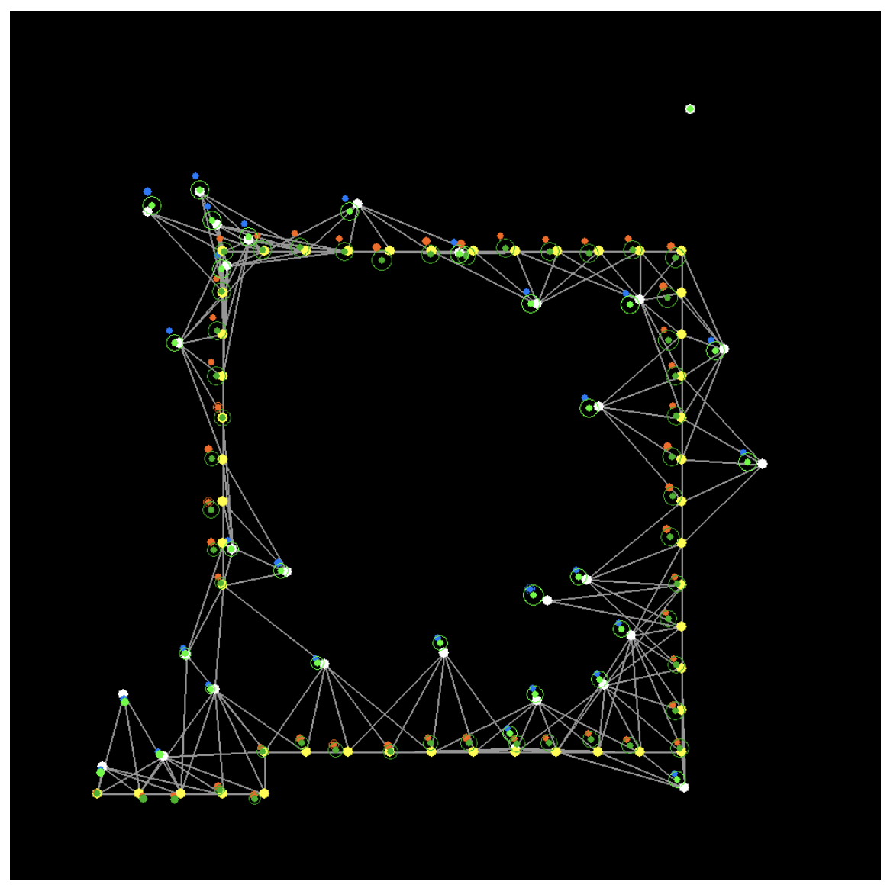

Bio
I am a second-year Ph.D. student at Imperial College London, advised by Prof. Andrew Davison. Previously I did my undergraduate and Masters in Physics at the University of Oxford.
I am interested in computer vision and machine learning. My research addresses both the capabilities and efficiency of scene understanding algorithms.
News
July 2019
Attended International Computer Vision Summer School (ICVSS) in Sicily.
July 2019
Beginning a 3 months research as a visiting student as MIT CSAIL with the
ALFA group!
June 2018
Recieved the prize for best Masters Project in Astrophysics at Oxford for my research in Gravitational Wave Astronomy
[pdf]!
Publications

FutureMapping 2: Gaussian Belief Propagation for Spatial AI
arXiv 2019
Andrew J. Davison, Joseph Ortiz
Teaching
TA for Mathematics Course CO145 2019 at Imperial.